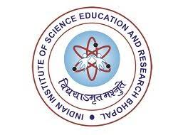

A friendly neighbourhood aspiring astrophysicist, born in the city of holy rivers — Prayagraj, India. An insatiable curiosity for physics and an urge to explore the world have taken me from the banks of the Ganges to the observatories of the world.
Education
2025 — 2026 · ongoing
M2 Physique des Plasmas et de la Fusion
Sorbonne Université · Université Paris-Saclay · IP Paris
Paris & Île-de-France, France
Current
2024 — 2025
Paris Physics Master, M1
Sorbonne Université
Campus Pierre et Marie Curie, 75005 Paris, France
2020 — 2024
BS Physics (4-year exit)
Indian Institute of Science Education and Research, Bhopal
Bhopal-Indore Bypass, Bhauri, Bhopal, MP 462066, India

— 2020
Ewing Christian Public School
CBSE · Class XII (2020) · Class X (2018)
Mutthiganj, Prayagraj, UP 211003, India
Awards & Honours
Graduate · Sorbonne Université
- Selected for the Sorbonne Université PPM Scholarship for the academic year 2024–25.
Undergraduate · IISER Bhopal
- Selected as VSP intern at Academia Sinica Institute of Astronomy and Astrophysics (ASIAA), Taiwan, 2024.
- Selected as VSP intern at Inter-University Centre for Astronomy and Astrophysics (IUCAA), Pune, 2023.
- Selected as VSP intern at Indian Institute of Astrophysics (IIA), Bangalore, 2023. [Offer letter]
- Finalist, Model Solavy Conference '21 — IISER Bhopal.
- Finalist, Science Quizzing League '21 — IISER Bhopal.
- Top 1.6% in Annual International Astronomy and Physics Competition.
School · ECPS, Prayagraj
- Stage 1 qualifier — NTSE 2018 (National Talent Search Examination, CBSE).
- Stage 1 qualifier — NSEJS 2018 (Junior Science), NSEP 2020 (Physics), NSEC 2020 (Chemistry) — HBCSE.
- International and national ranker in various Science Olympiad Foundation exams (Class 4–11).
References
Dr. Corentin K. Louis
CNRS Researcher · LIRA
Observatoire de Paris, Meudon, France
LIRA, Obs. de Paris →
Dr. Piyali Chatterjee
Associate Professor
Indian Institute of Astrophysics, Bangalore, India
Personal webpage →